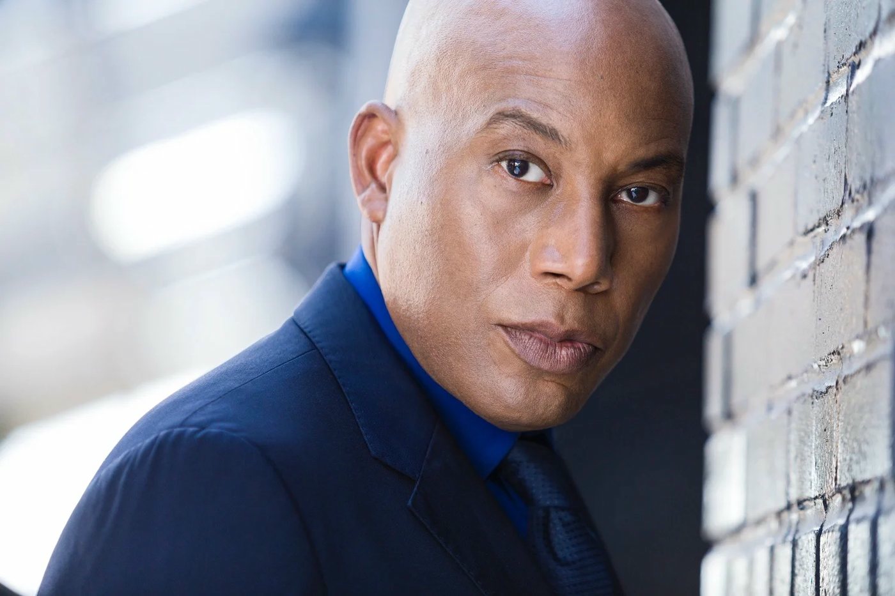

Who teaches at WhiteRobin
Angela Robinson and Scott Whitehurst
Partners in The WhiteRobin Group since 2008, both trained in the William Esper work and both members of Actors’ Equity and SAG-AFTRA. They teach from the same studio practice: workshops when announced, and one-on-one coaching by appointment.

Angela Robinson
Angela’s Broadway credits, as listed on The WhiteRobin Group site, include The Color Purple (with Fantasia), Wonderful Town, Bells Are Ringing (with Faith Prince), and Play On! (with André De Shields). National tours include The Color Purple, The Wizard of Oz (with Mickey Rooney and Eartha Kitt), and Dreamgirls (with Frenchie Davis).
Off-Broadway credits listed there include Call the Children Home (with Tamara Tunie) at Primary Stages, Radiant Baby (with Billy Porter) at The Public Theater, and three productions at City Center’s Encores! Screen work listed on the current site includes Veronica, “The Ice Queen,” on Tyler Perry’s The Haves and the Have Nots — with a 2015 Gracie Award for Outstanding Female Actor: One to Watch — plus Lady in the Lake (with Natalie Portman), Netflix’s Mea Culpa, and Law & Order: SVU.
She earned a BA from Florida A&M University, where she is a third-generation Rattler, and a two-year certificate from The William Esper Studio, where she studied with William Esper. She is a member of AEA and SAG-AFTRA. Her public Instagram is @angelarobschild.
Their site also offers a one-hour Artist Life Coaching session with Angela, and mentions an Artist Life Coaching Series. Dates for that series are not posted here; ask the studio if you want to know when the next one is offered.


Scott Whitehurst
The current WhiteRobin homepage lists Scott as an Associate Professor of Professional Practice and a core faculty member of the Acting division at Columbia University School of the Arts. It also states that he was formerly Co-head of the MFA Acting Department at The New School for Drama. An older “Who We Are” page on the same site still uses present-tense language about The New School; this page follows the wording on the current homepage.
Off-Broadway appearances listed on their site include Into the Hazard (Henry 5) at Walkerspace, Incommunicado with Tom Aldredge, Jeffrey with John Michael Higgins, Black Eagles at Manhattan Theatre Club, Waiting for Lefty with Marisa Tomei, directed by Joanne Woodward, One Fine Day at Soho Rep, and ten classical productions at the Pearl Theatre Company. Television credits listed there include Elementary, Evil, The Good Wife, House of Cards, Law & Order, Law & Order: Criminal Intent, Madam Secretary, Simple Justice, and Six Degrees.
He holds a BA from Columbia College, Columbia University, and an MFA from Mason Gross School of the Arts at Rutgers University, where he studied with William Esper and Maggie Flanigan. He is a member of AEA, SAG-AFTRA, and the National Alliance of Acting Teachers.
Regional and teaching work they list
Scott’s regional credits, as published on the WhiteRobin homepage, include Arena Stage, Arkansas Repertory Theatre, Bristol Riverside Theatre, Cincinnati Playhouse, the Contemporary American Theater Festival, Crossroads Theatre, Ford’s Theatre, Geva Theatre Center, Geffen Playhouse, Indiana Repertory Theatre, Pioneer Theatre Company, Pittsburgh Public Theater, Repertory Theatre of St. Louis, The Shakespeare Theatre in Washington, D.C., Stamford Center for the Arts, and eleven productions at The Shakespeare Theatre of New Jersey. Angela’s regional list on the same page includes the Alley, the Alliance, Baltimore Center Stage, Berkshire Theatre, the Eugene O’Neill Theatre Center, George Street Playhouse, North Carolina Theatre, Pittsburgh Public, and Paper Mill Playhouse.
An older biography page on their site also notes that Scott has taught at Ramapo College and Essex County College in New Jersey. Angela has said in a published interview that they have taught acting workshops in New Jersey and live in the Englewood, New Jersey area, commuting into the city. This site does not publish a home address.